本文主要讲解mongoDb的一些常用的操作符的用法.随着作者本身的能力的提高,本文也会不断的完善.
官方文档链接为有: https://docs.mongodb.com/manual/reference/operator/
什么是操作符呢? 其实说白了就是 "$" 加上 in,all ,eq,lt 等一些字符组成.
在讲解开始之前,先附上本文的测试数据,准备好测试数据.
db.users.drop();
var user1={ "username":"lison", "country":"china", "address":{ "aCode":"411000", "add":"长沙" },
"favorites":{ "movies":["杀破狼 2","战狼","雷神 1"],
"cites":["长沙","深圳","上海"] }, "age":18, "salary":NumberDecimal("18889.09"), "lenght":1.79
};
var user2={ "username":"james", "country":"English", "address":{ "aCode":"311000", "add":"地址" },
"favorites":{
"movies":["复仇者联盟","战狼","雷神 1"],
"cites":["西安","东京","上海"]
}, "age":24, "salary":NumberDecimal("7889.09"), "lenght":1.35
};
var user3={ "username":"deer", "country":"japan", "address":{ "aCode":"411000", "add":"长沙" },
"favorites":{ "movies":["肉蒲团","一路向西","倩女幽魂"],
"cites":["东莞","深圳","东京"] }, "age":22, "salary":NumberDecimal("6666.66"), "lenght":1.85 };
var user4= { "username":"mark", "country":"USA", "address":{ "aCode":"411000", "add":"长沙" },
"favorites":{ "movies":["蜘蛛侠","钢铁侠","蝙蝠侠"], "cites":["青岛","东莞","上海"] },
"age":20, "salary":NumberDecimal("6398.22"), "lenght":1.77 };
var user5= { "username":"peter", "country":"UK", "address":{
"aCode":"411000", "add":"TEST"
},
"favorites":{ "movies":["蜘蛛侠","钢铁侠","蝙蝠侠"],
"cites":["青岛","东莞","上海"] }, "salary":NumberDecimal("1969.88")
};
db.users.insert(user1);
db.users.insert(user2);
db.users.insert(user3);
db.users.insert(user4);
db.users.insert(user5);
由于笔者的英文水平有限,所以安装了翻译插件(彩云小译); 可以同时展现英文原文 和中文翻译, 这样可以一定程度上自行判定一下翻译是否准确,避免翻译后全是中,不显示英文,如果不准确的话,就被翻译插件带偏了.
首先看官网提供的查询操作符.
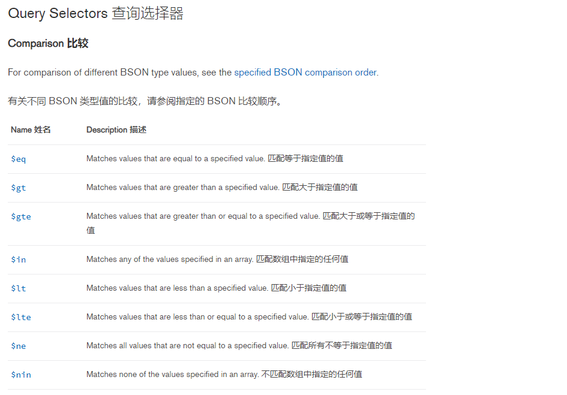
那么我们现在测试一下 这几个操作符的命令:
$eq. db.users.find({"username":{"$eq":"lison"}}).pretty(); 其实等同于命令 db.users.find({"username":"lison"}).pretty()
作用就是查询出数据用户名等于lison的数据. 即查询key = value 的数据,当然最好是用在数字上,字符串上用可以用, equas 的缩写
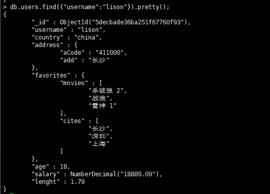
$gt: 匹配大于指定值的值 ,greater than 的缩写.
查询字段为字符串 : db.users.find({"username":{"$gt":"lison"}}).pretty();
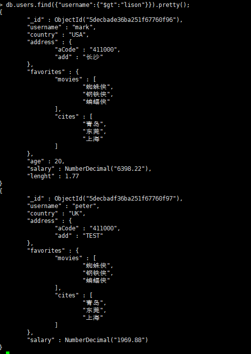
由以上结果可以看出$gt 用于字符串字段也是可以,比较大小的判定方式为字典中的排序方式.
查询字段类型为数字类型时 : db.users.find({"age":{"$gt":22}}).pretty();
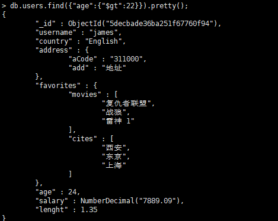
看出查询数字类型时,是查询比制定字段值数值大的值.
$gte : 查询字段值大于等于制定值. greater than or equas 的缩写.
语法为 db.users.find({"age":{"$gte":22}}).pretty();
结果就是gt 和 eq 的并集,这里就不再演示效果.
$in : 查询的值包含指定数组中的任何一个元素即可.
db.users.find({"username":{"$in":["lison","mark"]}}).pretty();
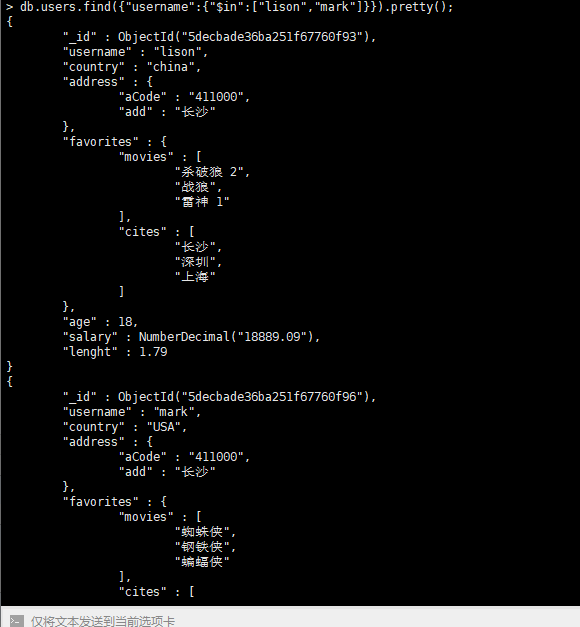
当 查询的字段类型为字符串类型时(非数组类型),可以看着该字段的值在时列表中的任何一个元素即可.
当查询的字段是一个数组类型的值时: db.users.find({"favorites.cites":{"$in":["西安","东京"]}}).pretty();
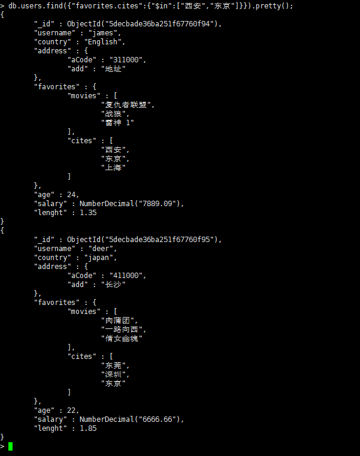
当查询的值时数据类型时,只要该值包含数据中的任何一项即可.
$all : 查询值包含制定数据中的每一个元素的数据.
db.users.find({"favorites.cites":{"$all":["西安","东京"]}}).pretty();
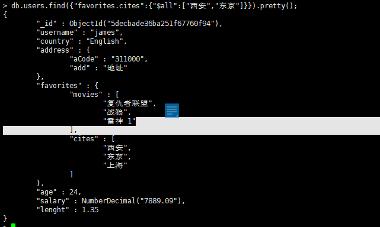
当查询字段为非数组时: db.users.find({"username":{"$all":["lison"]}}).pretty();
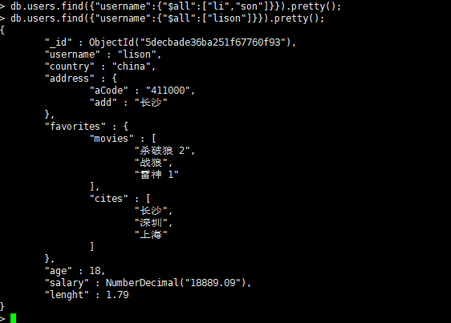
可以看到如果数据包含多个值,时永远不可能成立的.当数组中包含一个值时,和 $eq 的用法相同.
上面讲讲了 $eq, $gt,$gte, $in ,$all, 那么有了这些正向的操作,必然有和其对应的反向操作.接下来,再讲其反向操作就很容易理解了
$ne : 查询不等于制定值的数据. 是$eq 的反向操作.
db.users.find({"username":{"$ne":"lison"}});
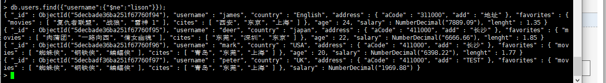
查询出用户名不等于lison的数据.
$lte : 小于等于指定值得数据,$gt 的反向操作.
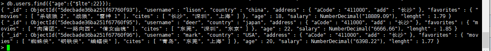
$lt : 小于指定值的数据 , $gte 的反向操作
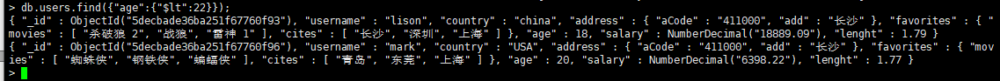
$nin 不包含数组中的任何一项, $in 的 反向操作
db.users.find({"favorites.cites":{"$nin":["东京","西安"]}});
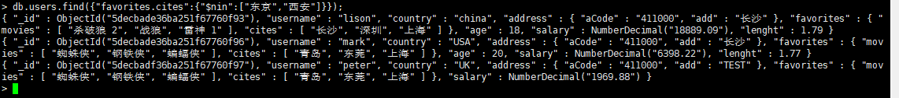
查询出喜欢的城市既不包含西安,也不包含东京的数据,与顺序无关.
至于$all 的反向操作符,目前笔者还未了解到. 但是可以借助其余的逻辑运算符进行关联出来
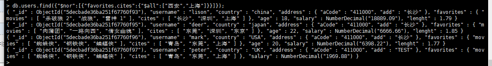
操作符的暂且更新至此,后续再次更新